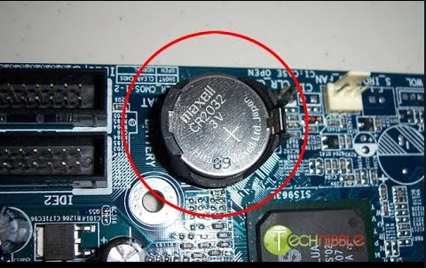
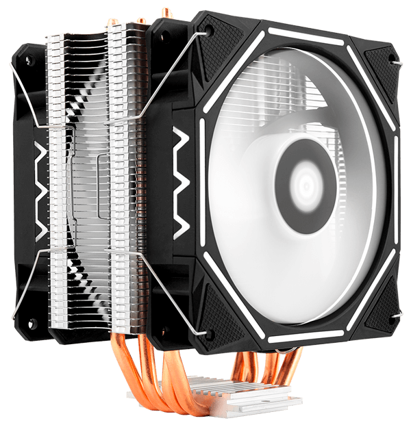
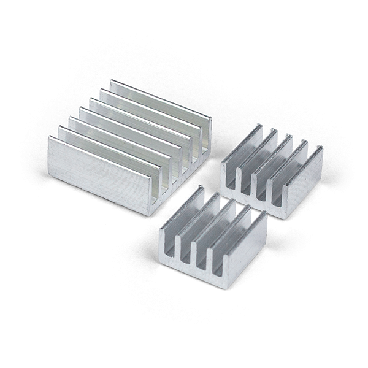

9. Defina Barramento e seus 3 tipos.
Barramento é um conjunto de linhas de comunicação que permitem a interligação entre dispositivos, como a CPU, a memória e outros periféricos.
São as linhas de transmissão que transmitem as informações entre o processador, memória e demais periféricos do computador.
Barramento local: É por onde o processador se comunica aos dispositivos essenciais da placa mãe.
Barramento de Expansão: É por onde conectamos os periféricos ao micro tal como placa de vídeo, som, etc.
Barramento PCI: Destinado a conectar periféricos à placa-mãe do computador. Mas você também pode encontrar outros nomes a ele como “slot” ou “soquete”.
10. Comente sobre BIOS.
A BIOS é um (firmware/hardware), pois é gravado em uma memória não volátil,
usado para realizar a inicialização do hardware durante o processo de inicialização e
para fornecer serviços de tempo de execução para sistemas operacionais e programas.
11. Qual a função da bateria de Litium?
Bateria íon-lítio serve para alimentar o CMOS que consequentimente mantemo relógio e outras informações funcionado em tempo real caso o computador seje desligado.

19.Qual a função do Cooler e Dissipador de Calor?
Eles atuam juntos em vários aparelhos eletrônico para diminuir a temperatura de um componente ou vários.
Dissipador: Impede que o ar quente fique parado num determinado componente.
Cooler: é um "mini ventilador" pois sua função é circular ar refrigerado no computador, tendo pelo menos 3, um para remover ar quente do processador, dois (ou mais) no gabinete um para puxar o ar de fora e jogar para dentro do gabinete do computador, e outro para puxar o ar do computador e jogar par fora do gabinete.


Topo